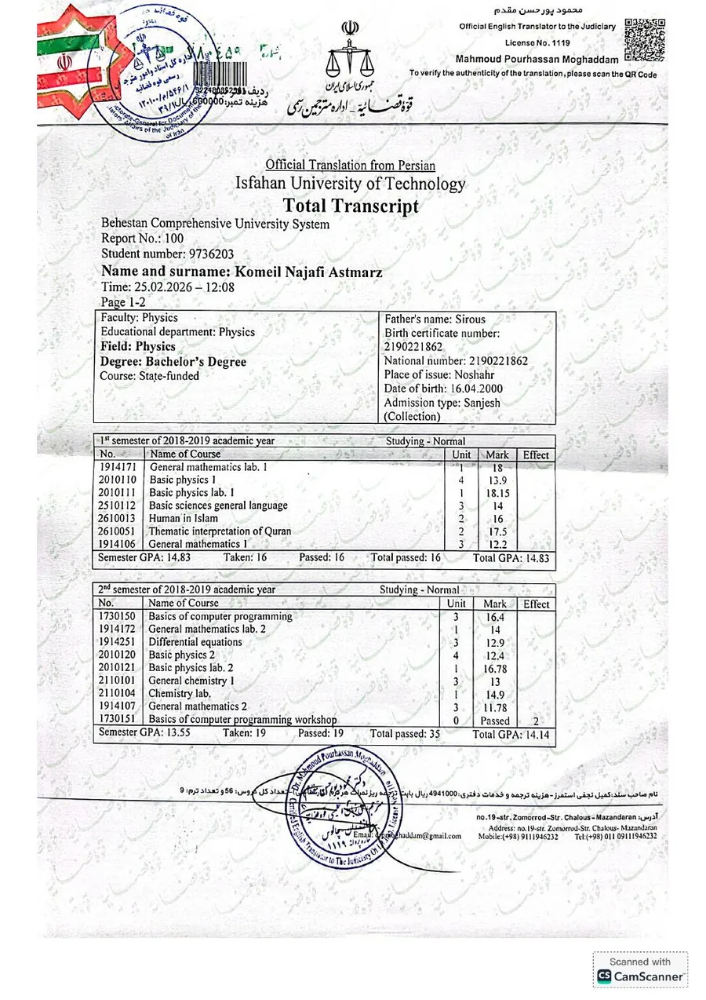

Undergraduate training across core physics, mathematics, laboratories, modern physics, optics, astrophysics, and solid state physics, with a final project on Friedmann spacetime.
15.04 GPA out of 20137 passed units22 Sep 2022 graduation
Official records
Translated university transcripts
The complete documents can be opened as PDF files. The previews show the first page of each certified translation.

Bachelor of Science in Physics
Official bachelor transcript
The translated record covers the full undergraduate program from 2018 to 2022 and reports a final student GPA of 15.04 out of 20.
My undergraduate and graduate studies took place during periods shaped by the COVID pandemic, social unrest, and regional conflict. These conditions repeatedly disrupted normal academic life and made sustained concentration difficult. I nevertheless completed every degree requirement and passed my courses with acceptable results.
To make my preparation more complete, I began using structured online courses as an additional route for reviewing important topics and strengthening areas that I want to develop further.